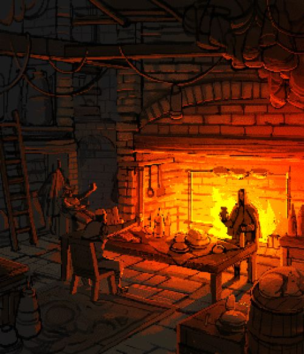

Mistérios da Mansão Esquecida

Após ouvir a oferta sedutora da seita, uma sensação de fascínio e intriga toma conta de você. O pensamento de desvendar os segredos proibidos da mansão e ganhar acesso ao poder e conhecimento ocultos é irresistível. Com determinação, você aceita a oferta da seita, comprometendo-se a seguir seu caminho e se tornar parte do círculo interno.